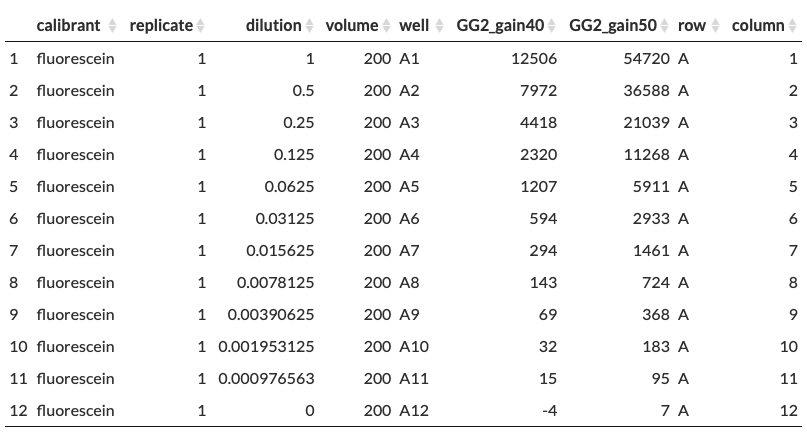

The Parsley App Guide
2024-08-12
About
Parsley is a universal plate reader data parsing application.
Multiwell plate readers are an important tool in the life sciences. They are frequently used to measure fluorescence, absorbance and luminescence, among other measurement types. As they are heavily used for high-throughput assays and screens, their analysis benefits from automated (programmatic) data analysis.
However, most plate readers export raw data in formats that software packages cannot work with, and that do not contain the necessary metadata for downstream analysis. A necessary initial step in every analysis is therefore extracting the data, reformatting it into the correct ‘tidy’ data structure, and joining it with any required metadata: we call this process ‘parsing’.
While a few parser functions for certain export formats from certain plate readers have been written, there is no generic tool that can handle data parsing from any plate reader: this is why Parsley was built.
Author: Eszter Csibra
Version: 1.0.1
Release: Oct 2023
What is a data parser?
Imagine a fluorescence intensity measurement on a dilution series of fluorescein gave you the following raw data and you wanted to analyse the data using an existing software package:

In its current form, you will get errors with any software, because the data does not look like any recognisable data table object: its rows and columns have irregular meanings, some metadata is included but not helpfully positioned, and most metadata you require for your analysis is missing (eg. fluorophore, buffer, dilution, volume, etc).
A parser extracts the data values from the raw data file, along with crucial metadata such as wells (ie. A1-H12), readings (eg. OD600, GFP..), and if applicable, wavelengths (eg. 485nm, for spectrum data) or time points (eg. 30min, for kinetic / timecourse data) into what we call Cropped Data:

..and adds relevant metadata crucial to the downstream analysis to give you Parsed Data:

Crucially, during metadata joining, the data is transformed into what is known as ‘tidy data’ format. Tidy data is of the form where every column is a variable, every row is an observation, and every cell contains a single value. In the above example, ‘wells’ is a variable, but ‘A1’ and ‘A2’ (etc) are not variables, they are instances of the ‘wells’ variable, so the Cropped Data is transformed such that the column names are no longer wells, but different fluorescence readings.
This table is saved as a CSV file, which can then be used easily for downstream data analysis without requiring manual editing or tidying.
How does it work?
Standard parser functions built for specific output formats work programmatically, for example they might identify the first line of data by finding the line that begins at the ‘0’ timepoint, or under the first heading starting ‘Measurement’. However, these rules are too specific to be used for a universal parser.
Parsley was developed to be as universally applicable as possible, so it makes very few assumptions about the type, orientation and size of the data. It therefore requires user-provided inputs to specify all of these parameters in turn: the type and orientation of the data, the location of data within the export file, as well as some crucial metadata (the names of readings, the order of the wells, and if applicable, the wavelengths used for spectra or the timepoints used for a timecourse). This is why it asks so many questions and is so particular about the exact response it requires!
Once data extraction is complete, it labels the data with the most crucial metadata: in other words, it adds the reading names as column names, and adds a column for the wells. For timecourse data, it also adds an extra column for time.
To finish, this tidy dataset is joined to user-provided metadata. The completed parsed data is then available to download as a CSV file for downstream analysis.
Who is it for?
The principal intended user is anyone who wishes to extract and reformat data for downstream analysis but does not wish to code their own parser function. It is expected that in most cases the downstream analysis will be carried out in R, Python or similar, however parsed data can also be useful for downstream analysis in Excel.
This tool is not just for those who don’t code. We have found Parsley useful when working with data from new plate readers or new data types, as it provides rapid access to tidy data without the upstream work required to write a bespoke function.
It even has applications in data storage and reuse. Tidy data joined to relevant metadata is an excellent way to store research data for personal use, sharing with collaborators, or in preparation for a manuscript submission. (Metadata has an unfortunate habit of getting lost unless we bind it to data!)
Which plate readers does it work with?
Parsley has been verified to work with the following data formats exported from the following plate readers:
- Tecan Spark plate reader (SparkControl Magellan software)
- Standard - direction horizontal/vertical, well data in rows/columns/matrixseparated/matrixXfluor
- Spectrum - direction horizontal/vertical, well data in rows/columns/matrixseparated/matrixXfluor/matrixnested
- Timecourse - direction horizontal/vertical, well data in rows/columns
- BMG LabTech Clariostar Plus plate reader (MARS software)
- Standard - default export format, -/+unused wells, -/+metadata, wellformats as A1 or A01, -/+transpose
- Spectrum - default export format, -/+unused wells, -/+metadata, wellformats as A1 or A01, -/+transpose
- Timecourse - default export format, -/+unused wells, -/+metadata, wellformats as A1 or A01, -/+transpose
- BioTek Synergy HT plate reader (Gen5 software)
- Standard - (column format)
- Timecourse - (row format)
- BioTek Synergy Neo2 plate reader (Gen5 software)
- Timecourse - (row format)
- Molecular Devices SpectraMax iD5 plate reader
- Standard - (matrix format)
- Beckman Coulter BioLector Microbioreactor
- Timecourse - (column format)
- Enzyscreen GrowthProfiler plate reader
- Timecourse - (row format)
- Growth Curves Bioscreen plate reader
- Timecourse - (row format)
- PerkinElmer VICTOR Nivo plate reader
- Timecourse - (column format)
- Tecan GENios plate reader
- Timecourse - (row format)
As time goes on, we hope to verify more plate reader outputs with Parsley. Please reach out if you use a different instrument and Parsley does (or does not!) work for your data exports.